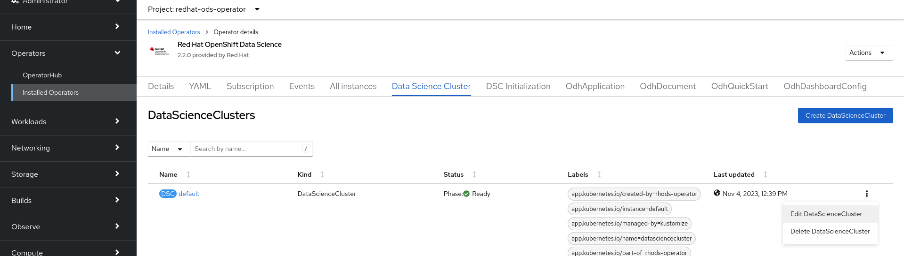
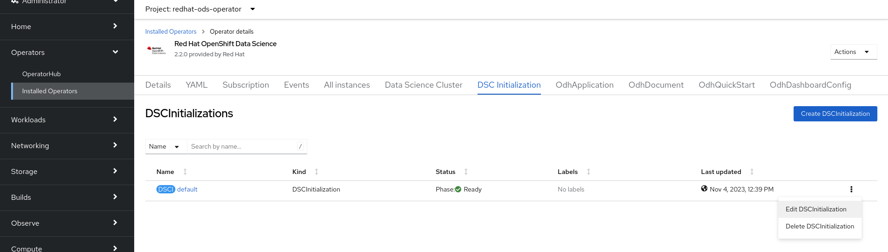
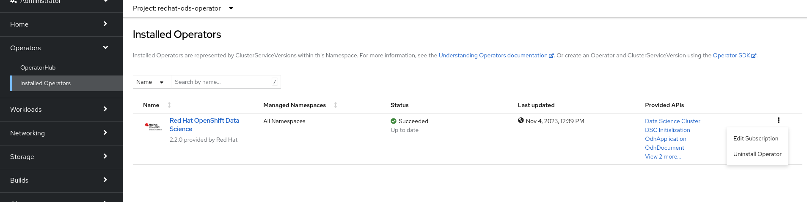
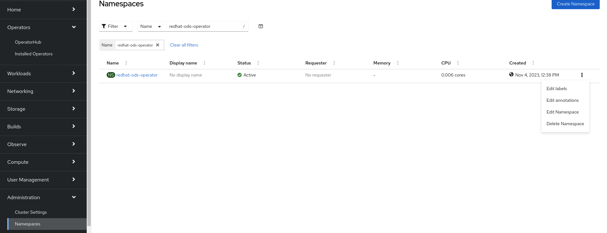
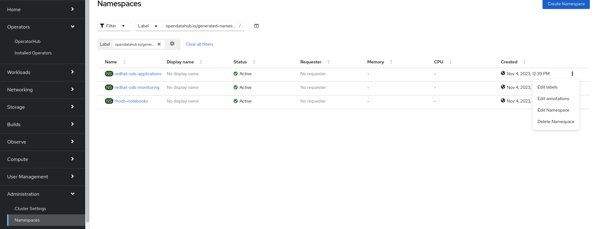
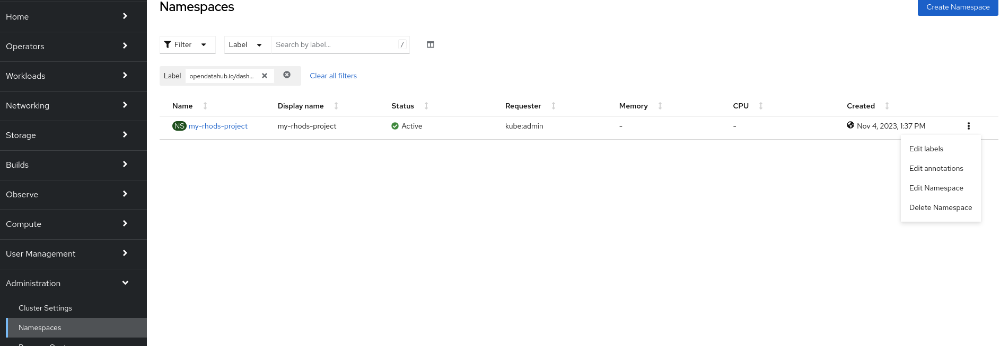
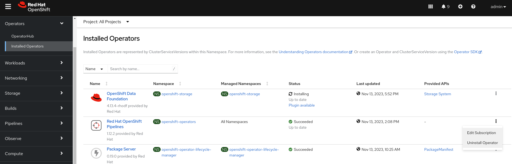
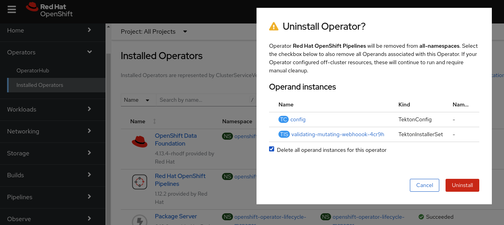

Uninstalling Red Hat Openshift Data Science
Red Hat Openshift Data Science operator manages Red Hat Openshift Data Science components hence uninstalling of the Red Hat Openshift Data Science requires uninstalling the Red Hat Openshift Data Science operator and cleaning some of the resources that have been created by the operator or users.
Demo: Uninstalling Red Hat Openshift Data Science
-
Log in to Red Openshift web console using a user which has the cluster-admin role assigned.
-
Delete the DataScienceCluster object.
Navigate to Operators → Installed Operators → Red Hat OpenShift Data Science → DataScienceCluster and delete all the DSC resources.
alternatively you can delete the DataScienceCluster objects from the CLI.
$ oc delete datasciencecluster $(oc get datasciencecluster --no-headers | awk '{print $1}') datasciencecluster.datasciencecluster.opendatahub.io "default" deleted -
Delete the DSCInitialization object that the Operator created during installation.
Navigate to the DSCInitialization tab and delete all DSCI resources.
alternatively you can delete the DCSI objects from the CLI.
$ oc delete dscinitialization $(oc get dscinitialization --no-headers | awk '{print $1}') dscinitialization.dscinitialization.opendatahub.io "default" deleted -
Uninstall the Red Hat OpenShift Data Science operator.
Navigate to Operators → Installed Operators and uninstall the Red Hat OpenShift Data Science operator.
Alternatively you can delete the operator’s subscription from the CLI. OLM will uninstall the operator.
$ oc delete subscription rhods-operator -n redhat-ods-operator subscription.operators.coreos.com "rhods-operator" deleted
-
Delete the namespace where the operator was installed.
Navigate to Administration → Namespaces, search for the
redhat-ods-operatorand delete it.Alternatively you can delete the namespace from the CLI.
$ oc delete ns redhat-ods-operator namespace "redhat-ods-operator" deleted
-
Delete the namespaces that the Operator created during installation. They are labeled with label opendatahub.io/generated-namespace=true.
Navigate to Administration → Namespaces, filter the namespaces using the label opendatahub.io/generated-namespace=true and delete them.
Alternatively you can delete the namespaces from the CLI.
$ oc delete ns -l opendatahub.io/generated-namespace namespace "redhat-ods-applications" deleted namespace "redhat-ods-monitoring" deleted
-
Delete all remaining namespaces created for Datascience projects. These namespaces are labeled by the label opendatahub.io/dashboard=true.
Navigate to Administration → Namespaces, filter namespaces using the label opendatahub.io/dashboard=true and delete them.
Alternatively you can delete them from the CLI.
$ oc get ns -l opendatahub.io/dashboard=true NAME STATUS AGE my-rhods-project Active 6h22m $ oc delete ns -l opendatahub.io/dashboard=true namespace "my-rhods-project" deleted
Uninstalling the Red Hat Openshift Data Science dependencies.
If you have installed some dependencies you can remove them as long as they are not used by other deployments. The following demonstration shows uninstallation of the Red Hat Openshift Pipelines operator
Demo: Uninstallation of the Red Hat Openshift Pipelines operator
-
Log in to Red Hat OpenShift web console using a user which has the cluster-admin role assigned.
-
Navigate to Operators → Installed Operators, choose All Projects and click on the three dots on the right side of the Red Hat Openshift Pipelines operator.
Click on Uninstall operator.
-
In the pop-up window scroll down, check Delete all operand instances for this operator and click on Uninstall
